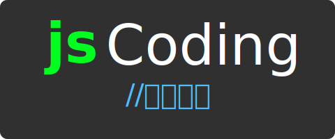

栈(Stack)
李艳生
湖北师范大学
物理与电子科学学院
2020年春季
栈概念
- 一组遵守后进先出(LIFO)的有序集合
- 一个栈包含栈底，栈顶，栈指针
- 添加或删除操作只能在栈顶
- 新元素在栈顶，旧元素在栈底
- 生活实例:一叠盘子
- 计算机实例:函数嵌套调用，浏览器历史记录
基于数组建栈
class Stack{
constructor(){
this.items = [];
}
push(element){}
pop(){}
peek(){}
isEmpty(){}
clear(){}
}
进栈
- 进栈只能在栈顶添加元素
- 利用数组push操作实现进栈
push(element){
this.items.push(element);
}
出栈
- 出栈只能在栈顶删除元素
- 利用数组pop操作实现出栈
pop(){
return this.items.pop();
}
查看栈顶元素
- 查看栈顶只获取栈顶元素,不删除
- 利用数组length属性
peek(){
return this.items[this.items.length - 1];
}
检查栈空
- 栈空返回true,不空返回false
- 利用数组length属性
isEmpty(){
return this.items.length === 0;
}
清空栈
clear(){
this.items = [];
}
基于对象建栈
class Stack{
constructor(){
this.count = 0;
this.items = {};
}
push(element){}
pop(){}
peek(){}
isEmpty(){}
clear(){}
}
进栈
- 进栈只能在栈顶添加元素
- 利用对象键值对操作实现进栈,this.count作为键，插入元素作为值
- 递增count变量
push(element){
this.items[this.count] = element;
this.count++;
}
检查栈空
- 栈空返回true,不空返回false
- 利用变量count
isEmpty(){
return this.count === 0;
}
出栈
- 出栈只能在栈顶删除元素
- 利用变量count操作实现出栈
pop(){
this.count--;
const ret = this.items[this.count];
delete this.items[this.count];
return ret;
}
查看栈顶元素
- 查看栈顶只获取栈顶元素,不删除
- 利用变量count
peek(){
return this.items[this.count - 1];
}
清空栈
clear(){
this.count = 0;
this.items = {};
}
任务
利用栈设计一种十进制转十六进制算法，并测试十进制数100转换十六进制。